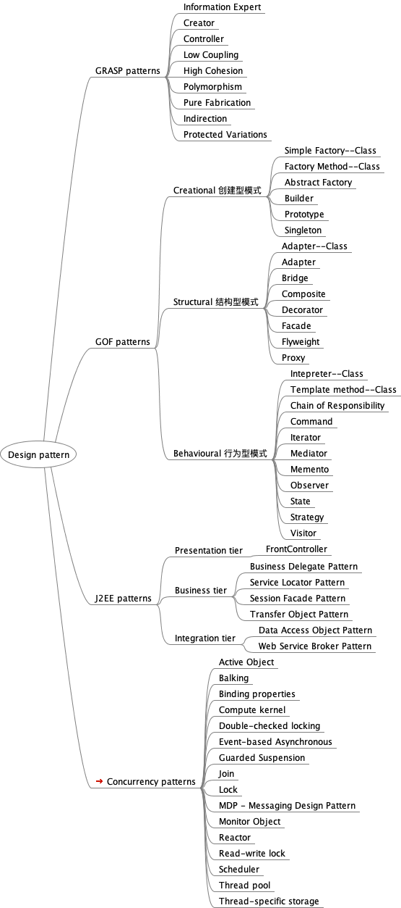

稳定性模式
Posted on Fri 28 May 2021 in Journal • 1 min read
关于模式
模式是一种可复用的解决方案，用于解决软件开发中的常见问题，应用于软件设计领域的模式称为设计模式。
最早的模式概念是由一位建筑师提出来的
The elements of this language are entities called patterns. Each pattern describes a problem that occurs over and over again in our environment, and then describes the core of the solution to that problem, in such a way that you can use this solution a million times over, without ever doing it the same way twice.
— Christopher Alexander, A Pattern Language
Documenting a pattern requires explaining why a particular situation causes problems, and how the components of the pattern relate to each other to give the solution.
我画过一张 Design pattern 思维导图

其实，模式也远不止这些，在软件开发领域还有许多，比如下面提到的稳定性模式
稳定性模式
读过一本好书 ”Release it! Design and Deploy Production-Ready Software“, 中文名为 ”发布！设计与部署稳定的分布式系统“
这本书提出了让系统稳定运行的若干模式
-
超时模式
-
快速失败模式
-
断路器模式
-
舱壁模式: 做好隔离，避免一荣俱荣，一损俱损 different thread pool, process/instance, server, cluster, rack, region
-
稳态: 避免人为无计划的更改产线上的软件包，数据和配置 做好监控，限制缓存，滚动日志，定时清除无用数据
-
快速失败，快速恢复，快速的主备切换
-
定期健康体检
-
维护一套与产线相同的环境进行破坏性和高压力的测试和验证
-
通过中间件解耦
-
做好分流和限流
-
做好背压机制： 让生产者根据消费者的能力来调整生产能力
-
刹车系统和手动模式